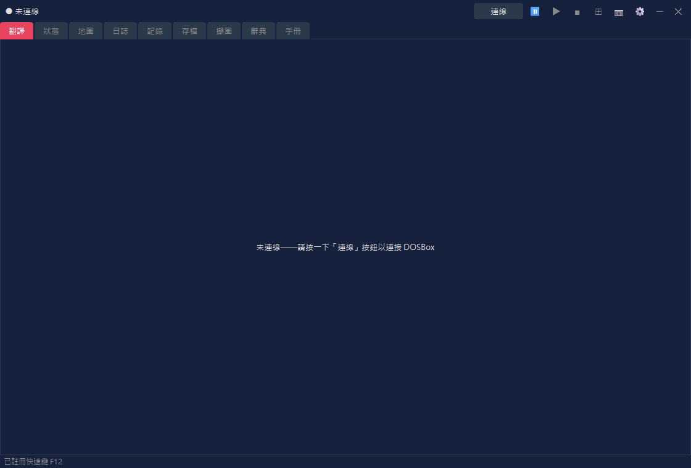
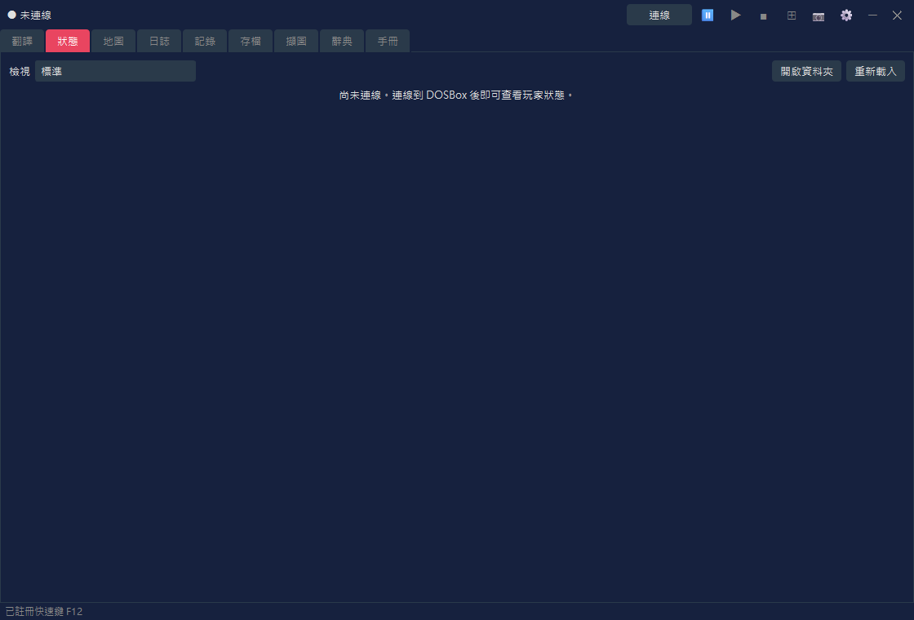
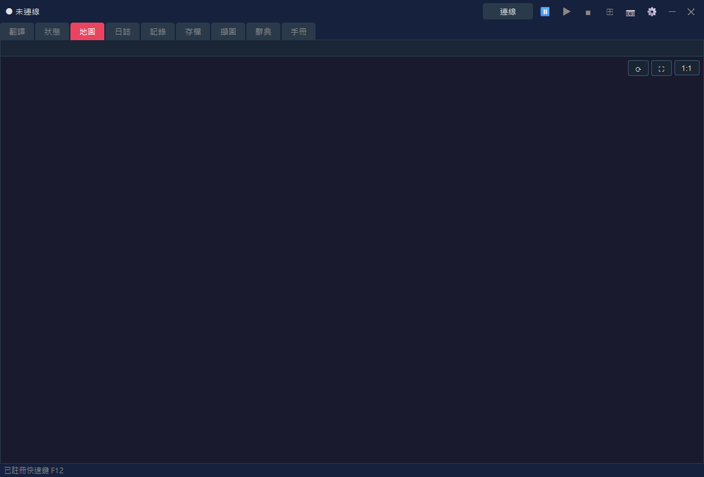
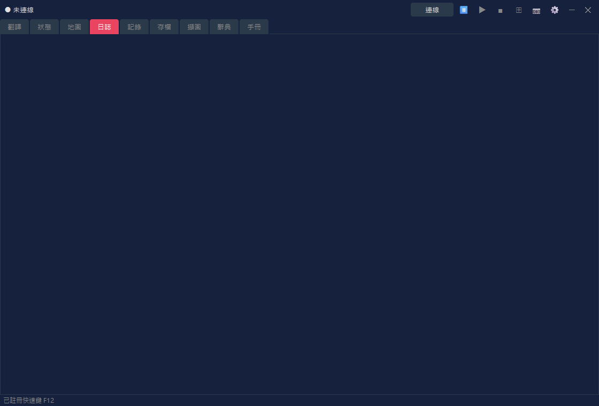
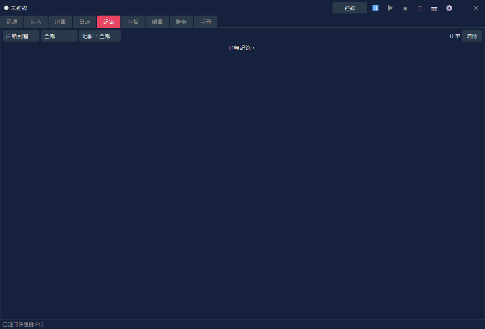
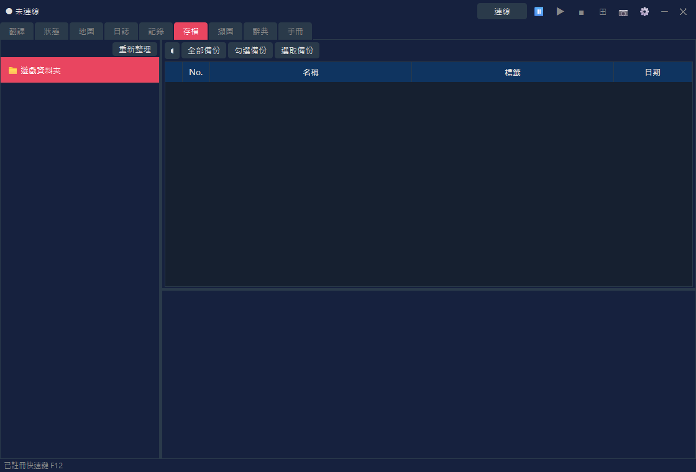
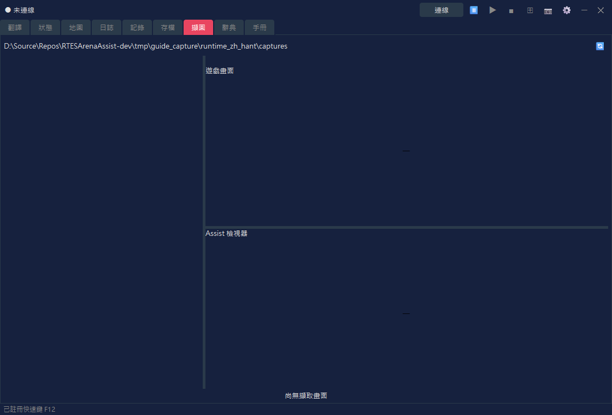
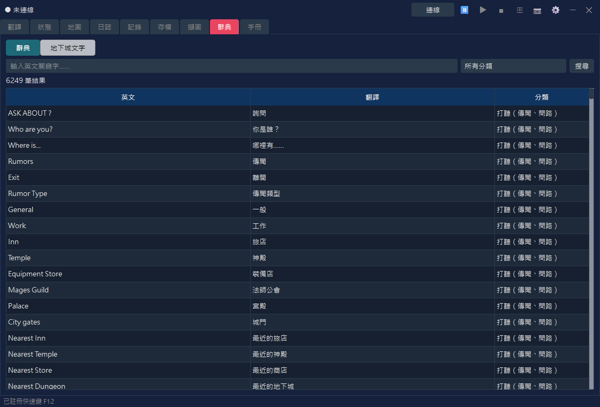
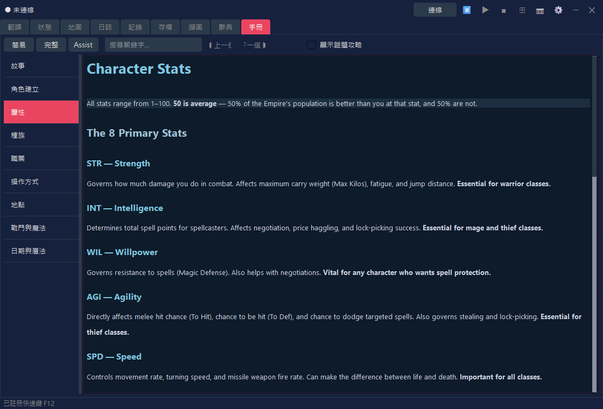
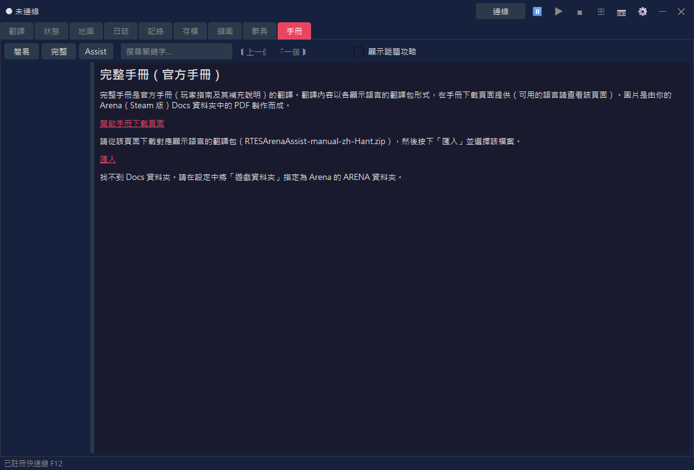

RTESArenaAssist 是在你遊玩《The Elder Scrolls: Arena》時提供輔助的應用程式。它會在遊戲旁顯示翻譯、地圖、日誌、紀錄、存檔管理、擷圖、辭典與手冊。
文中的圖片是在 Assist 使用你的顯示語言、「深色」主題、預設設定且未連線的狀態下擷取的。連線後，顯示內容會隨目前的 Arena 畫面與遊戲狀態而改變。
Assist 的基本用法是：啟動 Arena，用 Assist 連線，再按下 ⊞ 按鈕進入版面模式開始遊玩。在版面模式下，可以把 DOSBox 遊戲畫面與 Assist 的翻譯、地圖等分頁排列在同一個螢幕上，不必用 Alt+Tab 切換就能隨時查看。
設定的詳細說明，請參閱本手冊的「設定對話方塊」頁面。
公開版不包含 Arena 的原始文字資料。首次執行時，Assist 會根據你電腦上的 Arena 資料夾建立翻譯檔案。
首先選擇 Assist 的顯示語言。所選的語言會立即套用在此畫面上。
| 控制項 | 說明 |
|---|---|
| 語言下拉選單 | 選擇 Assist 介面的語言。此畫面只提供日文、English 與 Español。若要使用其他語言，請在啟動後到「設定」對話方塊「一般」分頁的「顯示語言」中選擇。 |
| 下一步 | 繼續前往指定 Arena 資料夾。 |
若在 Arena 執行中繼續，Assist 會自動從執行中的 Arena 偵測安裝位置。若偵測不到，請以 瀏覽… 指定 Arena 的資料夾。

| 項目 | 說明 |
|---|---|
| 遊戲安裝資料夾 | 指定 Arena 的 ARENA 資料夾。 |
| 瀏覽… | 從資料夾選擇對話方塊指定 Arena 資料夾。 |
| 重新檢查 | 重新偵測執行中的 Arena。 |
| 建立翻譯檔案 | 找到有效的 Arena 資料夾後，繼續建立翻譯檔案。 |
Assist 會根據 Arena 資料夾中的資料建立翻譯檔案。完成後會開啟主視窗。

建立期間會顯示進度列與目前的步驟。程式也會從執行中的 Arena 讀取資料，因此在完成之前請不要關閉 Arena。
Assist 的上方是連線列，中間是分頁區域，下方是狀態列。
Assist 啟動後處於未連線狀態。在 Arena / DOSBox 執行中，按下右上角的 連線 按鈕。

| 區域 | 說明 |
|---|---|
| 連線狀態 | 顯示「未連線」；連線時則顯示辨識到的畫面名稱、IMG 名稱等。 |
| 連線 / 中斷連線 | 連線到 DOSBox 內的 Arena，或中斷連線。 |
⏸ / ▶ / ■ | 暫停 / 繼續 / 停止朗讀。在「設定」對話方塊的「語音朗讀」分頁啟用後即可使用朗讀（預設為關閉）。 |
⊞ | 切換版面模式。按右鍵可開啟版面選單。 |
📷 | 儲存螢幕擷圖。在版面模式下，整個版面會儲存為一張圖片。當遊戲畫面（DOSBox）取得焦點時，按快速鍵（預設為 F12）也能以同樣方式儲存。 |
⚙ | 開啟「設定」對話方塊。 |
啟動後狀態列顯示的「已註冊快速鍵 F12」訊息，表示擷圖快速鍵已可使用。你可以在「設定」對話方塊的「一般」分頁中變更按鍵。
連線後，辨識到的畫面名稱會顯示在連線列的最左側。下方的範例是連線到 Arena 標題畫面的情形。

該畫面所使用的 IMG 名稱也會顯示在畫面名稱的右側（標題畫面等不使用 IMG 的畫面不會顯示）。在「設定」對話方塊的「顯示」分頁中，可以選擇是否顯示畫面名稱與 IMG 名稱。
Assist 是以版面模式使用為前提設計的。分頁在一般視窗中也能使用，但在版面模式下，你可以把遊戲畫面、翻譯、地圖、記錄等固定在同一個螢幕上一起查看。
在預設版面中，DOSBox 遊戲畫面在左側，Assist 的主要分頁在右側，輔助面板在下方。遊玩時可在右側查看地圖或日誌，並在下方面板或翻譯分頁查看目前畫面的翻譯。
| 操作 | 說明 |
|---|---|
按一下 ⊞ | 開始 / 結束版面模式。 |
在 ⊞ 上按右鍵 | 可選擇面板形式、DOSBox 角落、跟隨模式、重新配置、永遠在最上層等。 |
📷 | 在版面模式下，將包含 DOSBox 與 Assist 的整個版面儲存為一張圖片。 |
中斷連線 | 中斷與 Arena 的連線。先結束版面模式再中斷連線，比較容易整理畫面。 |
各分頁的螢幕擷圖是用來說明畫面的組成。連線時，顯示內容會隨目前的 Arena 畫面與遊戲狀態更新。
這是顯示目前畫面翻譯的核心分頁。顯示內容會依情況切換：標題畫面、角色建立、對話、設施、物品、法術等。

| 顯示內容 | 說明 |
|---|---|
| 翻譯 | 顯示目前畫面或事件的翻譯。 |
| 原文 | 依設定，也會一併顯示對應的英文原文。 |
| 專用檢視 | 職業清單、種族清單、裝備、設施清單、購買清單等會切換為專用且易讀的檢視。 |
在設定的「戰鬥資訊」分頁中，也可以讓翻譯分頁顯示戰鬥資訊。請選擇「戰鬥資訊與一般顯示並用」或「全面顯示戰鬥資訊」，再選擇「文字資訊」或「敵人量表顯示」。預設為「不顯示（維持一般顯示）」，即維持一般的翻譯分頁顯示。
這個分頁顯示角色的屬性與狀態。角色建立完成後，或在遊玩中連線時，會顯示狀態資訊。

| 顯示內容 | 說明 |
|---|---|
| 檢視 | 選擇「標準」（沿用至今的顯示）或其中一種設計（角色表）。翻譯分頁中的狀態畫面與屬性分配，也會使用這裡選擇的檢視。 |
| 屬性 | 顯示力量、智力等主要屬性。 |
| 狀態數值 | 顯示生命、疲勞、魔法點數等。 |
| 變更數值 | 變更屬性等操作，僅在你明確啟用作弊設定時才能使用（在「標準」檢視中）。 |
這項功能可用你選擇的設計來顯示狀態。若在「檢視」中選擇「標準」以外的項目，狀態就會以所選的設計顯示。設計是一個 HTML 檔案（範本），內建有 8 種設計，你也可以自己製作。部分設計會顯示臉部與全身圖（包含裝備）、角色的狀態（疾病、中毒、麻痺等），以及各身體部位的護甲等級（由裝備計算出的數值，數值越低防護越好）。臉部與全身圖是由你的 Arena 檔案製作而成。
| 控制項 | 說明 |
|---|---|
| 開啟資料夾 | 開啟存放自製角色表（HTML 檔案）的資料夾，位於 RTESArenaAssist.exe 所在位置的 character_sheets。第一次開啟時，會放入內建設計的副本。放進該資料夾的檔案，會在「檢視」清單中加上「（資料夾）」後顯示。 |
| 重新載入 | 重新載入資料夾中的角色表。修改檔案後請按此按鈕。 |
內建設計的清單、角色表的運作方式，以及可插入的數值與寫法，請參閱本手冊的「屬性介面設計（角色表）」頁面。
這個分頁顯示地下城、城市、野外、室內等的自動地圖。顯示內容會隨你在遊戲中的目前位置更新。

| 顯示內容 | 說明 |
|---|---|
| 目前位置 | 根據已連線的遊戲狀態，顯示目前的地圖與位置。 |
| 自動地圖 | 繪製已探索的區域、牆壁、入口、野外地形等。 |
| 顯示設定 | 格線、區塊座標、野外擴充顯示等，可在「設定」對話方塊中調整。 |
這個分頁讓你以顯示語言閱讀遊戲中日誌所記錄的內容。

| 顯示內容 | 說明 |
|---|---|
| 日期與標題 | 顯示各筆日誌的日期與摘要。 |
| 內文 | 以顯示語言顯示日誌的內文。 |
| 更新 | 遊戲中的日誌更新時，Assist 的顯示也會跟著更新。 |
這個分頁讓你以歷史紀錄的形式回顧 Assist 顯示過的翻譯。想重讀漏看的內容時很方便。

| 控制項 | 說明 |
|---|---|
| 排序 | 在「由新到舊」與「由舊到新」之間切換。 |
| 篩選 | 依分類或地點縮小記錄的範圍。 |
| 清除 | 清除目前顯示的記錄。 |
若你已啟用儲存戰鬥紀錄，且已有記錄，就可以在記錄分頁中切換「一般紀錄」與「戰鬥紀錄」。若沒有戰鬥紀錄，則和以往一樣只顯示一般紀錄。
這個分頁管理 Arena 的存檔欄位與備份。它協助進行存檔資料的操作，例如還原前自動備份。

| 控制項 | 說明 |
|---|---|
| 欄位清單 | 列出 Arena 的存檔欄位。 |
| 備份 | 備份所選的存檔。 |
| 還原 | 從備份還原存檔資料。 |
| 刪除 | 刪除不再需要的備份或存檔。 |
這個分頁讓你查看以 📷 按鈕儲存的螢幕擷圖。在版面模式下擷取的圖片也能在這裡開啟。

| 控制項 | 說明 |
|---|---|
| 清單 | 顯示已儲存的擷圖。 |
| 預覽 | 讓你查看所選的圖片。 |
| 鎖定 | 保護想保留的圖片，避免被刪除。 |
| 刪除 | 刪除所選的圖片或不再需要的圖片。 |
這個分頁用來搜尋 Assist 的翻譯辭典與地下城文字。可用來查詢遊戲中出現的單字與句子。

| 顯示模式 | 說明 |
|---|---|
| 辭典 | 依英文關鍵字、翻譯與分類搜尋。 |
| 地下城文字 | 搜尋並顯示來自 INF 的地下城文字。 |
這個分頁讓你以顯示語言閱讀 Arena 基本操作與系統的說明，以及 Assist 功能的說明。想在遊玩時確認操作方式或用語時可以使用。

| 控制項 | 說明 |
|---|---|
| 簡易 / 完整 / Assist | 切換顯示的內容（見下表）。 |
| 搜尋關鍵字 | 搜尋手冊。 |
| 左側清單 | 在故事、角色建立、操作方式、戰鬥與魔法等章節之間切換。 |
| 切換項目 | 內容 | 語言 |
|---|---|---|
| 簡易 | 遊戲的說明（9 章） | 12 種語言 |
| 完整 | 官方手冊的翻譯（匯入翻譯包後顯示） | 目前僅有日文 |
| Assist | Assist 功能的說明（基本操作、設定對話方塊、屬性介面設計（角色表）） | 12 種語言 |
完整版（官方手冊的翻譯）
在「完整」中，你可以閱讀官方手冊（Player's Guide 及其補充說明）的翻譯。翻譯內容與主程式分開發布，會依各顯示語言製作成翻譯包（RTESArenaAssist-manual-<language>.zip），放在手冊下載頁面上（目前僅有日文）。第一次使用時，請依下列步驟匯入翻譯包。

手冊中的圖片是由你的 Arena（Steam 版）的 Docs 資料夾中的 Player Guide.pdf 製作而成。若找不到該 PDF，或版本不同，就只會顯示文字。請確認設定中的「遊戲資料夾」並按下「重新製作圖片」，圖片就會顯示出來。匯入後，可以刪除下載的檔案。Assist 本身不會連上網際網路（下載是在你自己的瀏覽器中進行）。
「完整」中也會顯示一個連結，用來開啟 Docs 資料夾中的官方手冊（英文 PDF）。當顯示語言為英文時，只會顯示這個連結，而不是翻譯包。
連線，連線到 Arena / DOSBox。⊞ 進入版面模式。📷 或快速鍵（預設為 F12）擷圖。⊞ 結束版面模式，必要時再按 中斷連線。版面模式的顯示大小、面板形式、翻譯面板、擷圖資料夾等，都可以在「設定」對話方塊中調整。若要朗讀翻譯內容，也請在「設定」對話方塊的「語音朗讀」分頁中啟用。